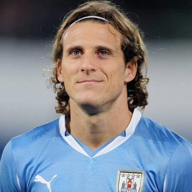

Luis Suárez
Luis Alberto Suárez Díaz(Salto, 24 de janeiro de 1987) é um futebolista uruguaio que atua como atacante. Atualmente, joga pelo Liverpool.
Vou falar de um jogador que se destacou muito, o que mais chamou a atenção nessa temporada que é o Luiz Suarez, fez uma belissima temporada pelo Liverpool pelo qual jogou 31 partidas e fez 30 gols, ajudando ao clube a conquistar o vice campeonato da liga.
Diego Forlán
Diego Forlán Corazzo (Montevidéu, 19 de maio de 1979) é um futebolista uruguaio que atua como atacante. Atualmente, joga pelo Cerezo Osaka.
Além do titulo de melhor jogador da Copa do Mundo de Futebol de 2010 é também o jogador com mais partidas disputadas na história da Celeste, e ainda detém o recorde de maior goleador da seleção celeste.
É filho de Pablo Forlán, ex-jogador que também defendeu a Seleção Uruguaia nos anos 1960 e 1970 e foi ídolo no Peñarol, no São Paulo e no Cruzeiro. Seu avô materno, Juan Carlos Corazzo, também foi jogador, além de técnico e assistente, quando participou da Copa do Mundo de Futebol de 1962
Diego Lugano
Diego Alfredo Lugano Moreno (Canelones, 2 de novembro de 1980)2 é um futebolista uruguaio que atua na posição de zagueiro. Atualmente, está sem clube.
Na posição de zagueiro, foi revelado pelo Nacional de Montevidéu, onde jogou entre 1999 e 2001, teve também uma passagem pelo Plaza Colonia.